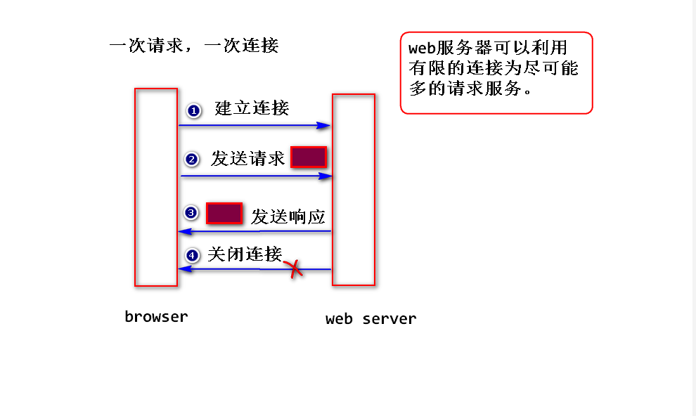
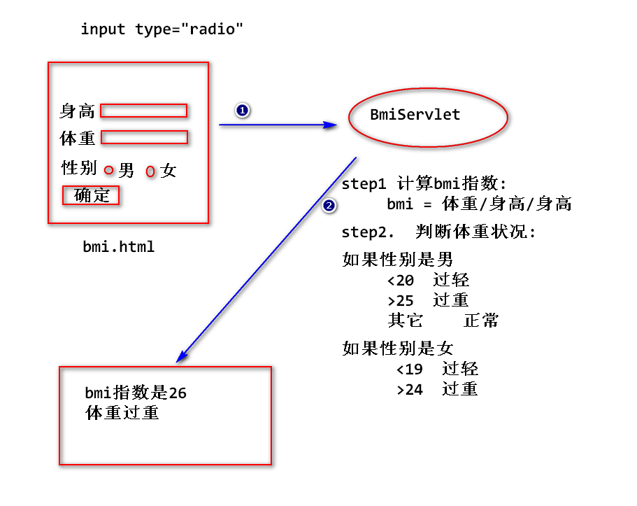

1. http协议(了解)
(1)什么是http协议?
是一种网络应用层协议、规定了浏览器与web服务器之间如何通信及相应的数据包的结构。
注:
TCP/IP: 传输层与网络层协议，负责将数据包可靠地传递。
http协议需要依赖TCP/IP来传递数据包。

(2)数据包的结构
1)请求数据包
请求行 (请求方式 请求资源路径 协议/版本)
若干消息头
注:
消息头是一些键值对(使用": "隔开)，用来传递一些特定的
信息。比如，浏览器可以发送"user-agent"消息头，告诉服务器，
浏览器的类型和版本。
实体内容(消息正文)
注:
只有当请求方式为post时，才会有数据。
2)响应数据包
状态行 (协议/版本 状态码 状态描述)
注:
状态码是一个三位数字，表示服务器处理请求的一种状态，
常见的有如下一些:
200 正常
500 服务器处理出错
404 依据请求路径找不到对应的资源
若干消息头
服务器也可以发送一些消息头给浏览器，比如，发送"content-type"
消息头，告诉浏览器，服务器返回的数据类型和编码。
实体内容
程序处理的结果，浏览器会解析出来，生成对应的页面。
(3)两种请求方式
1)get请求
a.哪一些情况下，浏览器会发送get请求?
a1.在浏览器地址直接填写某个地址
a2.点击链接
a3.表单默认的提交方式
b.特点
b1.会将请求参数显示在浏览器地址栏，不安全。
注：
有一些网络设备，比如路由器，会记录所有的请求地址。
b2.会将请求参数添加到请求资源路径的后面(即请求行里面),只能
提交少量数据给服务器。
注：
因为请求行大约只能存放2k左右的数据。
2)post请求
a.不会将请求参数显示在浏览器地址栏，相对安全一些。
注：
http协议不会对数据包中的数据加密。所以，对于敏感数据
(比如帐号密码)，需要加密处理(使用https协议)。
b.会将请求参数放到实体内容里面，可以提交大量的数据给服务器。
2.Servlet输出中文，如何处理?
(1)为什么会有乱码?
因为out.println方法在输出时，默认使用”iso-8859-1”来编码。
(2)如何解决?
response.setContentType(
"text/html;charset=utf-8");
3.表单包含有中文参数值，如何处理?
(1)为什么会有乱码?
当提交表单时，浏览器会对表单中的中文参数值进行编码，比如
使用”utf-8”来编码，而服务器端默认会使用”iso-8859-1”来解码。
所以会产生乱码。
注:
浏览器会按照打开该表单所在的页面时的字符集来进行编码。
(2)如何处理?
1)post请求
request.setCharacterEncoding(String charset);
注：
这行代码要添加到所有的request.getParameter方法的最前面。
这行代码只针对post请求有效。
2)get请求
修改server.xml,添加 <Connector URIEncoding="utf-8"/>
注:
只针对get请求有效。
tomcat8.0以上的版本，默认会使用utf-8来解码。
4.访问数据库
create database jsd1809db default character set utf8;
use jsd1809db;
create table t_user(
id int primary key auto_increment,
username varchar(50) unique,
password varchar(30),
email varchar(50)
);
step1.导包 (在pom.xml文件添加如下内容)
<dependencies>
<dependency>
<groupId>mysql</groupId>
<artifactId>mysql-connector-java</artifactId>
<version>5.1.6</version>
</dependency>
<dependency>
<groupId>commons-dbcp</groupId>
<artifactId>commons-dbcp</artifactId>
<version>1.4</version>
</dependency>
</dependencies>
step2.添加DBUtils类(可以从jdbc02工程直接拷贝过来)
public class DBUtils {
private static BasicDataSource dataSource;
static{
//读取属性配置文件的对象
Properties prop = new Properties();
//得到文件输入流
InputStream ips = DBUtils.class.getClassLoader()
.getResourceAsStream("jdbc.properties");
//把文件流加载到prop对象中
try {
prop.load(ips);
String driver = prop.getProperty("driver");
String url = prop.getProperty("url");
String username = prop.getProperty("username");
String password = prop.getProperty("password");
String initSize = prop.getProperty("initSize");
String maxSize = prop.getProperty("maxSize");
System.out.println(driver+url+username+password+initSize+maxSize);
//创建连接池数据源对象
dataSource = new BasicDataSource();
dataSource.setDriverClassName(driver);
dataSource.setUrl(url);
dataSource.setUsername(username);
dataSource.setPassword(password);
//设置连接池策略信息
dataSource.setInitialSize(Integer.parseInt(initSize));
dataSource.setMaxActive(Integer.parseInt(maxSize));
} catch (IOException e) {
e.printStackTrace();
}
}
public static Connection getConn()
throws SQLException{
return dataSource.getConnection();
}
}
step3.添加jdbc.properties文件
driver=com.mysql.jdbc.Driver
url=jdbc:mysql://localhost:3306/jsd1809db?useUnicode=true&characterEncoding=UTF-8
username=root
password=root
initSize=3
maxSize=3
step4.测试DBUtils，看能否获得连接。
public class Test2 {
public static void main(String[] args)
throws SQLException {
System.out.println(
DBUtils.getConn());
}
}
step5.在Servlet类当中，使用jdbc api访问数据库。
练习
计算一个人的ＢＭＩ指数，并且依据ＢＭＩ指数来判断一个人的
体重状况。
